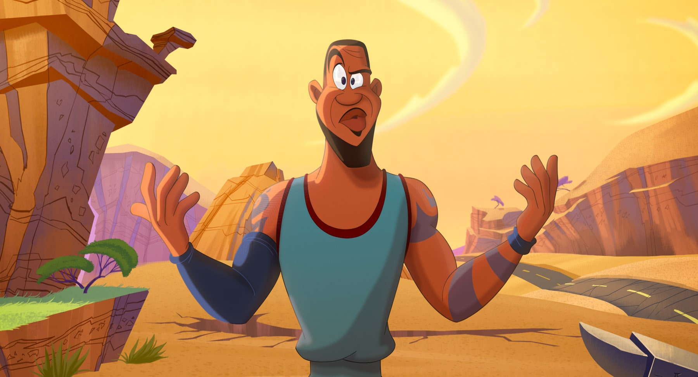
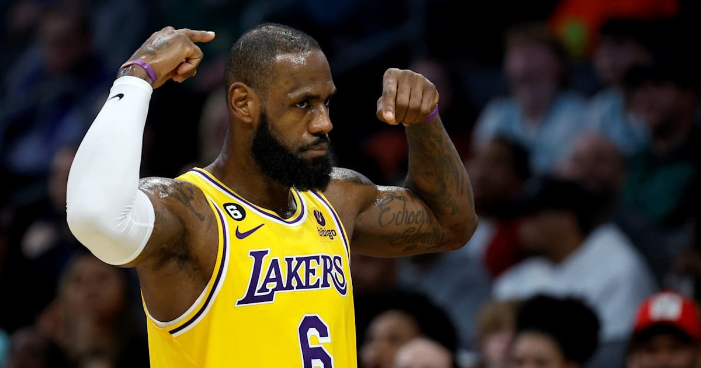

LeBron Raymone James Sr.(born December 30, 1984) is an American professional basketball player for the Los Angeles
Lakers of the National Basketball Association (NBA). Nicknamed "King James", he is widely regarded as one of the greatest
basketball players of all time, and is frequently at the center of debates regarding the sport's all-time best, often
being compared to Michael Jordan.[a] James has won four NBA championships from 10 NBA Finals appearances, having made
eight consecutive appearances between 2011 and 2018. He also won the inaugural NBA Cup in 2023 with the Lakers,
three Olympic gold medals as a member of the U.S. national team, and the Olympics MVP in the 2024 Summer Olympics.
Measuring 2.06m and weighing 113 kg , he mainly plays at the positions of winger , point guard and even power
forward in his last seasons. He is considered one of the best players in the history of the NBA. He is nicknamed
" King James" or " The Chosen One". He is also a triple Olympic champion with the United States team, in 2008, 2012 and 2024.
He set numerous records for precocity as an individual, and for seniority given his longevity at a very high level.
LeBron James was voted Rookie of the Year in 2004 and won the regular season MVP award four times (in 2009, 2010,
2012 and 2013). He was crowned NBA champion and Finals MVP in 2012 and 2013 with the Miami Heat , in 2016 with the
Cleveland Cavaliers , and in 2020 with the Los Angeles Lakers . In 2019, James was voted Male Athlete
of the Decade by the Associated Press.

HE WAS IN A MOVIE?!
Space Jam: A New Legacy (also known as Space Jam 2) is a 2021 American live-action/animated sports comedy film produced by Warner Animation Group, Proximity Media, and The SpringHill Company,
and distributed by Warner Bros. Pictures. The film was directed by Malcolm D. Lee from a screenplay by Juel Taylor, Tony Rettenmaier, Keenan Coogler, Terence Nance, Jesse Gordon, and Celeste
Ballard, and a story by Taylor, Rettenmaier, Coogler, and Nance.[8] It serves as a standalone sequel to Space Jam (1996) and is the first theatrically released film to feature the Looney Tunes
characters since Looney Tunes: Back in Action (2003). The film stars basketball player LeBron James as a fictional version of himself; Don Cheadle, Khris Davis, Sonequa Martin-Green, and Cedric
Joe star in live-action roles, while Jeff Bergman, Eric Bauza, and Zendaya headline the Looney Tunes voice cast. The film follows James enlisting the Looney Tunes' aid to win a basketball game
in a Warner Bros themed virtual multiverse against a rogue artificial intelligence's avatars after James's youngest son is abducted by the AI. "Space Jam: A New Legacy" is considered a fun,
family-friendly movie with positive messages, with many praising the inclusion of numerous cameos and the updated visual effects, though some criticize its heavy reliance on product placement
and a somewhat weak storyline compared to the original "Space Jam."

A POEM FOR THE KING!
Boy oh boy where do I even begin. Lebron…, I have loved you ever since I first laid eyes on you. The way you drive into the paint and strike fear into your enemies eyes.
Your smooth touch around the basketball rim, and that gorgeous jumpshot. I would do anything for you.You had a rough childhood, but you never gave up hope. You
are even amazing off the court, you're a great husband and father, sometimes I even call you king. I forvever dread and weep,
thinking of the day you will one day retire. I would sacrifice my own life it were the only thing that could put a smile on your face. You have given me so much
joy, and heartbreak over the years. I remember when you first left clevenland and its like my heart got broken into a million pieces. But a tear still fell from my right
eye when I watched you win your first ring in miami, because deep down, my glorious king deserved it. I just wanted you to return home. Then allas, you did, my sweet baby
boy came home and I rejoiced. 2015 was a hard year for us baby, but in 2016 you made history happen. You came back from 3-1 and I couldn't believe it. I was crying,
bawling even, and I heard my glorious king exclaim these words,"CLEVELAND, THIS IS FOR YOU!" Not only have you changed the game of basketball and the world forever,
but you've eternally changed my world. And now you're getting older, but still the goat, my glorious king, Lebron James. 🥰❤️🫶🏽